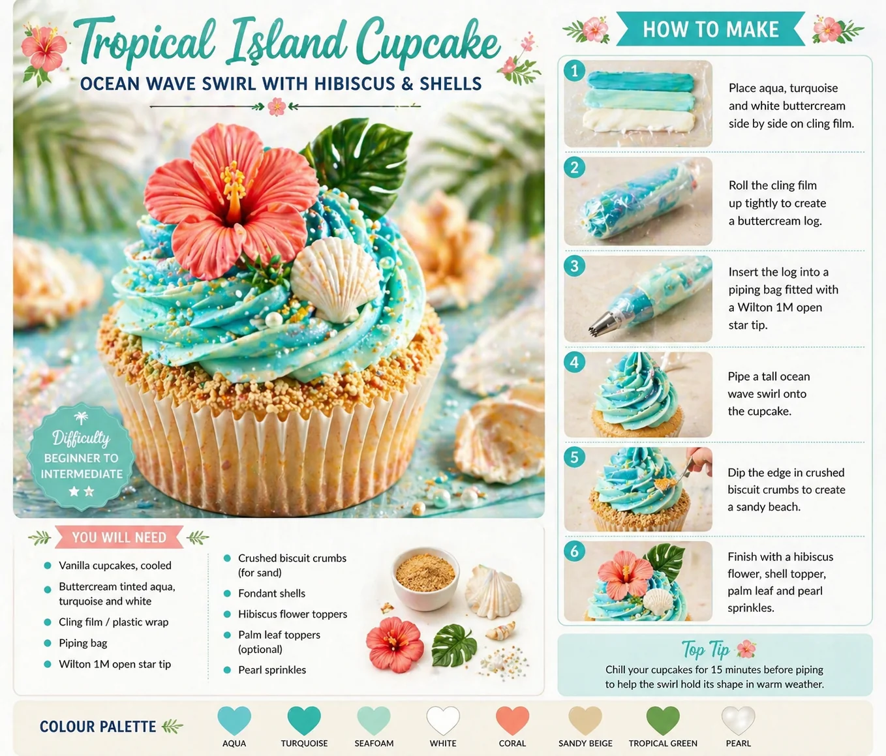
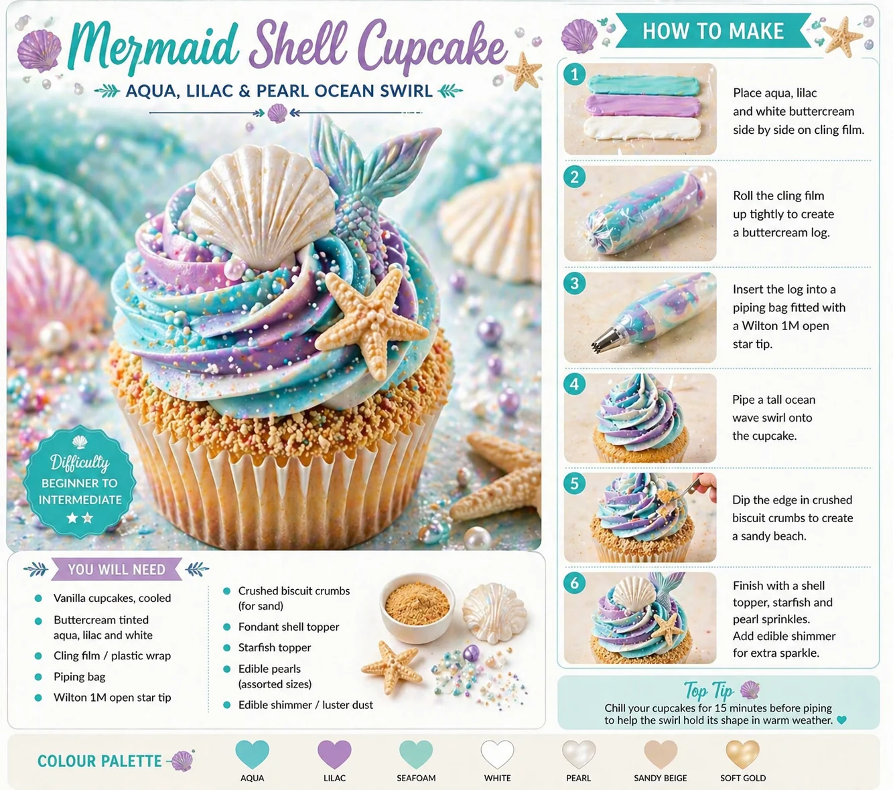

Tropical cupcakes are a beautiful way to bring summer colour, beach styling and island details into a party table. With aqua ocean swirls, coral hibiscus flowers, palm leaves, fondant shells, sandy biscuit crumbs and pearl sprinkles, they work perfectly for tropical island parties, Hawaiian-inspired birthdays, beach parties and summer dessert tables.
At Little Moment Studio, our focus is balloon styling and celebration setups for birthdays across Kent and the surrounding areas. We do not make cupcakes ourselves, but we love helping families plan a party look where the balloons, backdrop, colours and dessert table all feel coordinated. We’re happy to recommend a trusted local cake maker if you would like cupcakes to complement your tropical balloon display.
This guide covers two easy tropical cupcake designs:
- Tropical Island Cupcake
- Ocean Shell Cupcake
Both designs use soft beach colours and a simple cling film piping technique. Together they make a summer dessert table that looks colourful, joyful and coordinated without needing professional decorating skills.
Why These Two Designs Work Together
The two designs contrast in tone and detail while sharing the same beachy colour family. The Tropical Island Cupcake is the bolder centrepiece design — bright, tall and layered with hibiscus flowers, shells and palm leaves. The Ocean Shell Cupcake is the softer supporting design — quieter, more beach-inspired, and easier to make in large numbers. Together they give a table a mix of drama and delicacy.
| Design | Style | Difficulty | Best For |
|---|---|---|---|
| Tropical Island Cupcake | Tall ocean swirl with hibiscus, shell and palm leaf | Easy | Summer colour and tropical impact |
| Ocean Shell Cupcake | Ocean swirl with shell, starfish and pearls | Easy | Softer beach styling and elegant detail |
Tropical Island Cupcake

The Tropical Island Cupcake has the strongest summer party look. Bright aqua, turquoise and white buttercream piped into a tall swirl, finished with a coral hibiscus flower, fondant shell, palm leaf and a sandy biscuit crumb edge — it instantly reads as tropical and works beautifully alongside aqua and coral balloon garlands, beach backdrops and palm leaf styling.
What You Will Need
| Item | Purpose |
|---|---|
| Vanilla cupcakes, cooled | Base for the design |
| Buttercream — aqua, turquoise and white | Ocean wave swirl |
| Cling film | Cling film method for multi-colour swirl |
| Piping bag | Holds the buttercream log |
| Wilton 1M open star tip | Creates the tall swirl |
| Crushed biscuit crumbs | Sandy beach edge |
| Coral hibiscus flower topper | Main tropical decoration |
| Fondant shell topper | Beach detail |
| Palm leaf topper | Tropical foliage detail |
| Pearl sprinkles | Finishing texture |
| Edible shimmer (optional) | Highlights the ocean tones |
| Pineapple topper (optional) | Extra tropical accent |
Best Piping Tip for the Tropical Island Cupcake
Use a Wilton 1M open star tip. It creates a tall swirl with clear ridges that make the aqua, turquoise and white colours show beautifully — giving the cupcake height, movement and a strong base for the hibiscus flower and shell topper. The ridges catch the pearl sprinkles and edible shimmer especially well.
How to Make Tropical Island Cupcakes
- Divide and tint the buttercream. Split your buttercream into three bowls. Tint one aqua, one turquoise and leave one white. Keep the colours fresh and bright rather than dark — aqua and turquoise should feel beachy and clean, not heavy. Gel colours give better results than liquid as they do not soften the buttercream.
- Lay the buttercream on cling film. Place a sheet of cling film on your work surface. Pipe or spoon the three colours side by side in long strips — aqua, then turquoise, then white — so they sit neatly next to each other.
- Roll the buttercream log. Roll the cling film around the buttercream to form a tight log. Twist both ends gently to seal it. The log should be firm enough to handle without squeezing buttercream out of the ends.
- Place the log into the piping bag. Cut the tip off one end of the log and place it, cut end down, into a piping bag already fitted with the Wilton 1M tip. As you pipe, all three colours will come out together to create the ocean wave effect.
- Pipe the ocean wave swirl. Hold the piping bag upright over the cupcake. Start at the outside edge and pipe around in a spiral, moving inwards and upwards to build a tall swirl. Finish with a small peak at the centre.
- Add the sandy biscuit crumb edge. While the buttercream is still soft, press or sprinkle crushed biscuit crumbs around the base edge of the swirl. Keep it light and even — a neat sandy border looks deliberate, while too many crumbs can look messy.
- Finish with tropical decorations. Place the coral hibiscus flower, fondant shell and palm leaf slightly off-centre so the ocean swirl still shows clearly. Add pearl sprinkles along the buttercream ridges, and a light dusting of edible shimmer if using. Add a pineapple accent last if including one.
Colour Ideas for Tropical Island Cupcakes
| Theme | Buttercream | Decorations | Result |
|---|---|---|---|
| Classic tropical island | Aqua, turquoise and white | Hibiscus flower, shell, palm leaf, pearls | Bright summer party look |
| Hawaiian flower | Coral, aqua and white | Hibiscus flower, pineapple topper | Bold tropical flower table |
| Pineapple party | Yellow, green and white | Pineapple topper, palm leaf | Cheerful pineapple theme |
| Soft beach | Seafoam, sandy beige and white | Shell topper, sandy crumbs, pearl | Gentle coastal styling |
| Luxury tropical | Teal, champagne and ivory | Gold hibiscus, pearl shell, shimmer | Premium summer table |
Ocean Shell Cupcake

The Ocean Shell Cupcake is the softer, supporting design. Aqua, lilac and white buttercream create a calm, ocean-inspired swirl — finished with a fondant shell, starfish detail, edible pearls and sandy biscuit crumbs. It sits beautifully beside the bolder Tropical Island Cupcakes on the table, adding a quieter beach note that stops the display from feeling too intense.
What You Will Need
| Item | Purpose |
|---|---|
| Vanilla cupcakes, cooled | Base for the design |
| Buttercream — aqua, lilac and white | Soft ocean swirl |
| Cling film | Cling film method for multi-colour swirl |
| Piping bag | Holds the buttercream log |
| Wilton 1M open star tip | Creates the swirl |
| Crushed biscuit crumbs | Sandy beach edge |
| Fondant shell topper | Main decoration |
| Small starfish topper | Ocean detail |
| Edible pearls | Pearl and shimmer finish |
| Edible shimmer or lustre dust | Subtle ocean sparkle |
| Seafoam sprinkles (optional) | Extra ocean texture |
Best Piping Tip for the Ocean Shell Cupcake
Use the same Wilton 1M open star tip as Design 1. The defined ridges make the aqua, lilac and white colours visible as a natural ocean blend, and give the cupcake enough structure to hold the shell and starfish without them sinking. Using one tip across both designs also makes the batch faster to produce.
How to Make Ocean Shell Cupcakes
- Divide and tint the buttercream. Split the buttercream into three bowls. Tint one aqua, one soft lilac and leave one white. Keep the tones lighter and softer than for the Tropical Island Cupcake — this design should feel calm and beach-inspired rather than bold.
- Use the cling film method. Place the aqua, lilac and white buttercream side by side in strips on a sheet of cling film. Roll into a firm log, twist the ends, and place into a piping bag fitted with the Wilton 1M tip.
- Pipe the ocean swirl. Hold the piping bag upright and pipe a tall swirl, starting from the outside edge and moving inwards and upwards. The aqua and lilac should appear as soft bands through the white, giving a peaceful ocean wave effect.
- Add the sandy biscuit crumb edge. Press crushed biscuit crumbs lightly around the base edge of the swirl, matching the sandy finish of the Tropical Island Cupcake. This detail connects the two designs visually and helps the table feel coordinated.
- Add the shell and starfish. Press a fondant shell and small starfish into the buttercream at slightly different angles so the arrangement looks natural. Place them just off-centre so the swirl colours are still visible.
- Finish with pearls and shimmer. Add pearl sprinkles along the buttercream ridges, then dust lightly with edible shimmer or lustre dust. Keep the shimmer subtle — it should catch the light gently rather than overpower the soft ocean colours.
Colour Ideas for Ocean Shell Cupcakes
| Theme | Buttercream | Decorations | Result |
|---|---|---|---|
| Ocean shell | Aqua, lilac and white | Shell, starfish, pearls, shimmer | Soft ocean beach look |
| Seafoam beach | Seafoam and pearl white | Shell, sandy crumbs, pearl | Gentle coastal styling |
| Aqua and coral | Aqua and white | Coral shell, starfish, pearl | Tropical colour matching |
| Sandy beach | Seafoam, sandy beige and white | Shell, starfish, sandy crumbs | Relaxed natural beach feel |
| Luxury pearl | Ivory and champagne | Pearl shells, edible shimmer | Elegant premium finish |
Tropical Cupcake Variations
Both designs can be adapted for different tropical party styles without changing the core technique.
| Variation | How to Style It |
|---|---|
| Hawaiian flower cupcake | Add hibiscus flowers, palm leaves and coral accents to a coral and aqua swirl |
| Pineapple cupcake | Use yellow and green buttercream with a pineapple topper and palm leaf detail |
| Ocean wave cupcake | Keep aqua, turquoise and white swirl only — no toppers for a minimal look |
| Palm leaf cupcake | Aqua buttercream with a palm leaf topper and sandy crumb edge |
| Soft beach cupcake | Seafoam, pearl white and sandy beige swirl with shell and starfish |
| Summer birthday cupcake | Add a number topper, birthday sprinkles or name plaque to either design |
| First birthday tropical | Use pastel aqua, blush coral and cream — softer tones for younger children |
| Tropical party cupcake | Combine coral flowers, shells and gold sprinkles for a more luxurious table |
Styling Tropical Cupcakes on a Dessert Table
These cupcakes look best when the balloon colours repeat the same beachy palette. See our full guide to tropical island party balloon and dessert table ideas for the full styling approach.
| Balloon Colour | Why It Works with These Cupcakes |
|---|---|
| Aqua | Matches the ocean buttercream directly |
| Turquoise | Adds tropical brightness and depth |
| Coral | Matches the hibiscus flowers in Design 1 |
| White | Keeps the overall display clean and airy |
| Sandy beige | Echoes the biscuit crumb sandy edges |
| Tropical green | Matches palm leaf details in both designs |
| Pearl | Pairs with the pearl sprinkles and shimmer |
Good styling details for a tropical cupcake table include aqua and coral balloon garlands, palm leaves as table decoration, rattan trays and wooden cake stands, shell cookies, pineapple cake pops, coconut cups and sandy biscuit crumb spread across the table cloth. For a coordinated approach, see how to match cupcakes with your balloon display.
Suggested Cupcake Mix
Box of 12:
| Quantity | Design |
|---|---|
| 6 | Tropical Island Cupcakes |
| 6 | Ocean Shell Cupcakes |
Box of 6:
| Quantity | Design |
|---|---|
| 3 | Tropical Island Cupcakes |
| 3 | Ocean Shell Cupcakes |
Tips for Better Results
- Use fairly stiff buttercream. The swirl needs to hold height and support decorations. If the buttercream is too soft, the hibiscus flowers and shells may sink and the swirl will lose definition.
- Keep colours bright but not dark. Tropical cupcakes look best when the colours feel fresh and beachy. Over-tinted aqua can look too heavy — aim for the shade you see in shallow sea water.
- Keep the biscuit crumb edge neat. A light, even sandy border looks intentional. Too many crumbs scattered across the top of the swirl looks messy rather than styled.
- Use one statement flower. A single well-placed coral hibiscus looks stronger than multiple small flowers clustered together.
- Add pearl sprinkles last. Placing them after the toppers lets you guide them neatly along the buttercream ridges rather than having them hidden under decorations.
- Chill before displaying in a warm room. Aqua and turquoise colours look brightest when the swirl holds its shape clearly. Ten to fifteen minutes in a cool place before displaying is enough.
Storage & Transport
| Situation | Recommendation |
|---|---|
| Same day | Store in a cool, dry place — away from direct sunlight |
| Warm room | Chill briefly before display so the swirl holds its shape |
| Fondant toppers | Keep dry and away from moisture — fondant becomes sticky in humidity |
| Biscuit crumbs | Add near the end so they stay crisp and hold their texture |
| Pearls and shimmer | Add after piping and topping so placement is neat |
| Transport | Use a cupcake box with enough height clearance for hibiscus and shell toppers |
Your Questions Answered
Can you make tropical cupcakes the day before?
Yes. Store them in a covered cupcake box or airtight container in a cool, dry place. If using fondant shell, hibiscus or palm leaf toppers, keep them away from humidity as fondant can become sticky. Biscuit crumb edges are best added on the day as they can soften overnight. Toppers can be made ahead and left to firm up, which makes them easier to handle and less likely to break during decorating.
What is the best piping tip for tropical cupcakes?
A Wilton 1M open star tip works best for both designs in this guide. It creates a tall swirl with defined ridges that make the aqua, turquoise and white colours show beautifully as an ocean wave effect. The ridges also provide a good base for hibiscus flowers, shell toppers and palm leaf details. See our piping tips guide for more on choosing tips for different finishes.
How do you make a multi-colour ocean swirl?
Use the cling film method. Place aqua, turquoise and white buttercream side by side in long strips on a sheet of cling film. Roll tightly into a log, twist the ends to seal, then place the log cut-end-down into a piping bag fitted with the Wilton 1M tip. As you pipe, the three colours come out together to create a natural ocean wave effect. For a detailed walkthrough of the technique, see our guide to the cling film buttercream method.
Where can you buy hibiscus flower, shell and palm leaf toppers?
Ready-made edible hibiscus flowers, fondant shells, palm leaf toppers and pineapple decorations are available from UK cake suppliers including The Cake Decorating Company, Cake Stuff, Amazon UK and Etsy UK. Silicone moulds for fondant or chocolate shells and hibiscus flowers are also widely available. Search for ‘hibiscus cupcake topper’, ‘tropical fondant mould’ or ‘beach shell cupcake topper’. Check sizes carefully as some moulds are designed for larger cakes.
What colours work best for tropical cupcakes?
Aqua, turquoise and white are the strongest combination for the ocean wave swirl. Coral, hibiscus pink and tropical green work well for flower and leaf details. For a softer beach look, seafoam, pearl white and sandy beige give a gentler result. For a first birthday or softer table, pastel aqua, blush coral and cream tones work beautifully without the design feeling too intense.
Useful Tools
- Wilton 1M open star piping tip
- Disposable piping bags
- Aqua, turquoise, lilac and coral gel food colours
- Cling film / plastic wrap
- Hibiscus flower toppers (edible or fondant)
- Shell silicone mould or ready-made shell toppers
- Starfish toppers
- Palm leaf toppers
- Pineapple toppers (optional)
- Edible pearls and pearl dragées
- Edible shimmer or lustre dust
- Crushed biscuit crumbs (digestives work well)
- Aqua and coral cupcake cases
- Cupcake box with height clearance for toppers
The two designs work beautifully as a pair — the Tropical Island Cupcake brings colour and drama with its layered hibiscus, shell and palm leaf details, while the Ocean Shell Cupcake adds a softer, beachier finish that lets the main design stand out. A tray of mixed tropical cupcakes looks especially good when some are bold and others are quieter.
For more birthday cupcake ideas and tips on building a complete summer party table, see our guide to tropical island party balloon and dessert table ideas.
Planning a Tropical Party in Kent?
Little Moment Studio creates coordinated balloon displays and styled celebration setups for birthdays and summer parties across Sittingbourne and Kent. We can help with the aqua balloon garland, beach backdrop and overall party look — and we’re happy to recommend a trusted local cake maker for tropical cupcakes and cakes to complete the table.